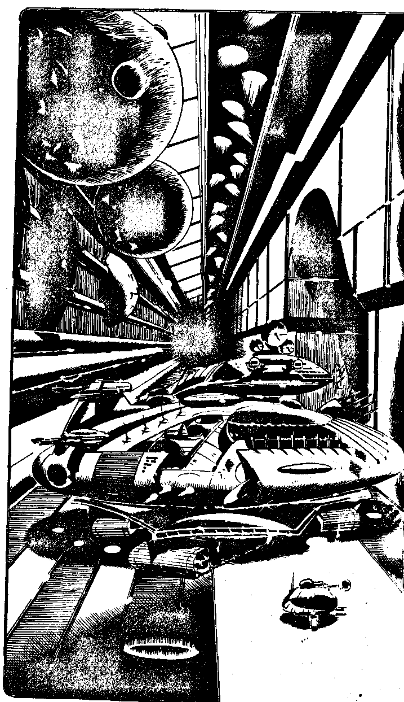

28
You hurtle through the air down the corridor. Below, you can see a large droid with a shield travelling on a rail running the length of the corridor. Within seconds you flash past it but moments later your microbeam radar picks up a high-energy leading ahead. A large mobile fortress lies in the corridor, an armoured disc bristling with weapon pods and sensor banks. It has two plasma cannon trained on you, several missile bases are tracking you and two energy beam gun turrets are swivelling around. The massive tunnel continues beyond it and another forks off the side. You have a few seconds in which to act. Will you:
| Lock on the Battle computer and launch a fission warhead missile, if you have one left? | Turn to 115 |
| Use your fusion beam on the fortress? | Turn to 126 |
| Pull back on the joystick to gain height and try to weave through its imminent attacks? | Turn to 104 |